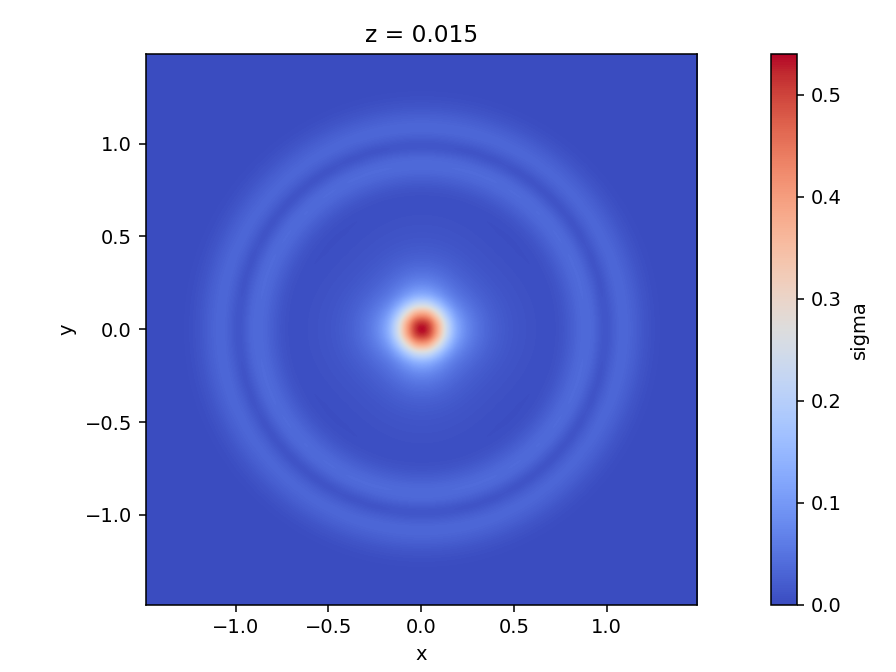
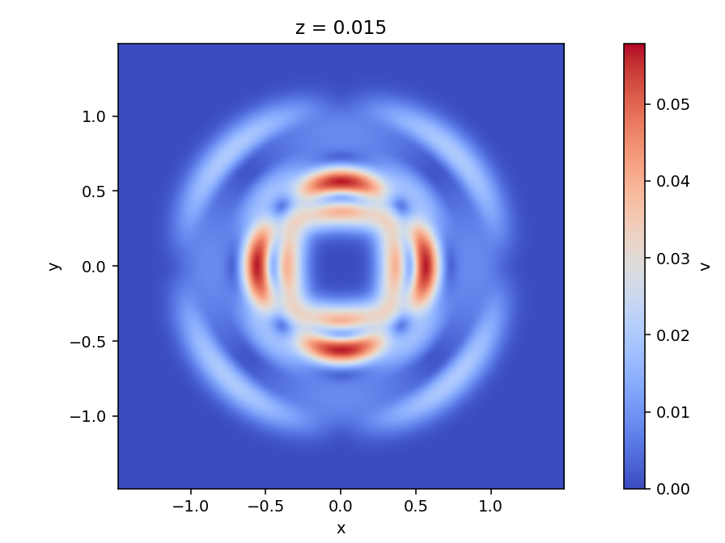

|
Peano
|
|
Peano
|
The final tutorial steps up to three dimensions and to a system with nine unknowns: the linear elastic wave equations, the workhorse of computational seismology. An isotropic explosion at the centre of a cube radiates an outgoing spherical wave, which we visualise by slicing the 3D cube interactively. A 3D high-order ADER-DG solver is also a genuinely HPC-scale workload, so this part doubles as a tour of how ExaHyPE uses parallel hardware - and we measure its MPI strong scaling directly. The notebook is tutorials/05_elastic/ElasticWaves.ipynb with its implementation in ADERDGSolver.cpp.
We use the first-order velocity-stress form. The unknowns are the velocity \(\mathbf{v} = (v_x, v_y, v_z)\) and the symmetric stress tensor \(\boldsymbol{\sigma} = (\sigma_{xx}, \sigma_{yy}, \sigma_{zz}, \sigma_{xy}, \sigma_{xz}, \sigma_{yz})\) - nine fields in total:
\( \begin{equation*} \rho\, \partial_t v_i = \partial_j \sigma_{ij}, \qquad \partial_t \sigma_{ij} = \lambda\, \delta_{ij}\, \partial_k v_k + \mu \left( \partial_i v_j + \partial_j v_i \right). \end{equation*} \)
Here \(\rho\) is the density and \(\lambda, \mu\) the Lamé parameters. The medium carries two wave types: fast P-waves at \(c_p = \sqrt{(\lambda + 2\mu)/\rho}\) and slower S-waves at \(c_s = \sqrt{\mu/\rho}\). We pick \(\rho = 1\), \(c_p = 2\), \(c_s = 1\). The isotropic explosion (a Gaussian bump on the diagonal stresses) excites only P-waves, so we expect a clean expanding spherical shell.
A \(3 \times 3 \times 3\) cube centred on the origin with non-periodic walls. The only change from the 2D tutorials is dimensions = 3 and the three-component size/offset/periodic_bc. The solver is an ADER-DG scheme of order 4 whose unknowns are a velocity of multiplicity 3 and a stress of multiplicity 6:
my_project = exahype2.Project(
namespace = ["tutorials", "exahype2", "elastic"],
project_name = "Elastic",
executable = "Elastic",
dimensions = 3,
size = [ 3.0, 3.0, 3.0],
offset = [-1.5, -1.5, -1.5],
periodic_bc = [False, False, False],
)
aderdg_solver = exahype2.solvers.aderdg.GlobalAdaptiveTimeStep(
name = "ADERDGSolver",
order = 4,
time_step_relaxation = 0.9,
unknowns = {"v": 3, "sigma": 6},
auxiliary_variables = {},
)
aderdg_solver.set_implementation(
initial_conditions = exahype2.solvers.PDETerms.User_Defined_Implementation,
boundary_conditions = exahype2.solvers.PDETerms.User_Defined_Implementation,
flux = exahype2.solvers.PDETerms.User_Defined_Implementation,
max_eigenvalue = exahype2.solvers.PDETerms.User_Defined_Implementation,
)
aderdg_solver.add_kernel_optimisations(is_linear=True)
my_project.add_solver(aderdg_solver)
ADERDGSolver.cpp holds the PDE terms. The unknowns are addressed through the generated Shortcuts enum (Shortcuts::v + 0..2, Shortcuts::sigma + 0..5). initialCondition sets the Gaussian explosion (equal diagonal stresses, at rest); boundaryConditions gives a quiescent exterior to reflect off; maxEigenvalue returns the P-wave speed \(c_p\); and flux is the velocity-stress flux, written out per direction with the Lamé parameters recovered from \(\rho, c_p, c_s\).
A 3D high-order run is heavier than the 2D tutorials - at order 4 each cell carries \((4+1)^3 = 125\) degrees of freedom per unknown:
export OMP_NUM_THREADS=4 ./Elastic -et 0.5 -ns 10 -l 2
A 3D field is best explored slice by slice. show_solution_3D cuts axis-aligned 2D slices through the cube: pick the slice axis with the slice ⊥ dropdown (x/y/z), move the slice slider through the volume, pick a field, and animate over time with the time slider / Play. Picking a slice (or the field or axis) warms all of that slice's time frames in parallel across cores - a brief Prefetching N/M* - so the time slider and playback are then smooth:
from postprocessing import render_solution render_solution.show_solution_3D("ADERDGSolver", field="sigma")
The expanding spherical P-wave appears in the mid-plane slice as concentric rings - the cross-section of the spherical shell. Moving the slice slider towards the cube's faces makes the rings shrink, exactly as cutting a sphere off-centre should:

-l 3 (a \(27^3\)-cell grid, a few-minutes run). The default level 2 shows the same physics, only coarser - raise the level in the run command if you want the same crispness.A 3D high-order ADER-DG solver is exactly the kind of compute-bound workload HPC exists for. ExaHyPE exposes parallelism through two independent control surfaces, neither of which needs a code change:
mpirun -n N ./Elastic ...: ExaHyPE decomposes the domain across the ranks and balances the load automatically. MPI is built in by default; the banner reports MPI N Rank(s) plus the domain-decomposition MPI Load Balance statistics.OMP_NUM_THREADS environment variable; the startup banner echoes it as OpenMP N Thread(s).The notebook measures the first one, MPI strong scaling: it runs the same problem on 1, 2 and 4 ranks (one thread per rank, so the measurement is pure MPI), reads the Average Time per Time Step the solver prints (with plotting off, -ns 0, to time pure compute), and plots the speedup against the ideal linear line. The gap is the usual strong-scaling reality - halo exchange between the subdomains, load imbalance and the serial fraction of the traversal.
The isotropic explosion sets the three diagonal stresses equal. That is a pure volume change, so it radiates only the fast P-wave - the clean spherical shell (a ring in any slice). A shear source - a single off-diagonal stress - instead launches the slower S-wave ( \(c_s = 1\), half the P-wave speed), whose radiation is not spherical but a four-lobed quadrupole.
In ADERDGSolver.cpp, inside initialCondition, replace the three diagonal-stress lines
Q[Shortcuts::sigma + 0] = bump; // sigma_xx Q[Shortcuts::sigma + 1] = bump; // sigma_yy Q[Shortcuts::sigma + 2] = bump; // sigma_zz
with a single off-diagonal (shear) component:
Q[Shortcuts::sigma + 3] = bump; // sigma_xy (shear) -> launches an S-wave
Rebuild and re-run, then view the velocity field sliced through the cube's mid-plane (slice axis z, middle slice position). In place of the P-wave's ring you will see the four lobes of the S-wave:

level to 3 for a much heavier run and re-measure the scaling - bigger problems usually scale better.OMP_NUM_THREADS=4 mpirun -n 2 ./Elastic -et 0.3 -ns 0 -l 2, and watch both banner lines. On clusters this is the standard configuration - one rank per node or socket, threads inside.order (e.g. 5) for more accuracy and far more arithmetic per cell.That concludes the tutorial series - you have driven ADER-DG and Finite Volumes, static mesh refinement, a-posteriori limiting, and a parallel 3D solver. Congratulations!